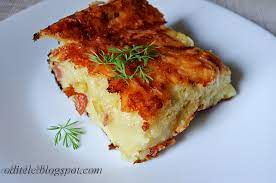

Pagrindinis

Reikalingi produktai:
- 3.5 kilogramo bulviu
- 200ml pieno
- 2 svogunai
- 2 kiausiniai
- druskos
- truputi aliejaus
Gamybos eiga:
- Bulves ir svogūną sutarkuoti. Pieną užvirti ir supilti į bulvių ir svogūnų tarkius, viską gerai išmaišyti.
- Įmušti kiaušinius, pagardinti druska. Išmaišyti.
- Formą ištepti aliejumi. Išmaišytą masę supilti į kepimo formą ir kepti 200 C laipsnių orkaitėje apie 1 valandą.
- Patiekti galite su grietinės ir kepintos šoninės padažu.